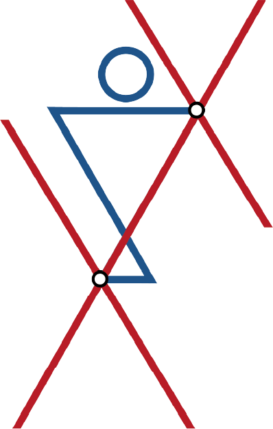

台灣PNF協會與全球國際講師長期合作，把國際最新的 PNF 臨床推理、研究實證與應用帶回台灣，讓治療師與健康產業從業人員持續與國際同步。我們相信，PNF 不是一套被保存下來的經典技術，而是一門持續演進的臨床科學。我們的使命，是讓台灣與世界站在同一條起跑線上，一起推動 PNF 的下一步。從前導課系列、PNF 1 + PNF 2 認證課程、主題工作坊，到 PNF 3 進階認證、PNF 4A・4B 高階認證，陪你一步步建立完整的 PNF 能力。
不知道從哪裡開始？照這條路走，一步步建立完整的 PNF 能力。
共 75 小時。可分 2 個時段（5＋5 天）或 3 個時段（3＋3＋3 天）上課，課程內容與總時數相同。
IPNFA 認證的國際講師親自來台授課。
[學員回饋內容 1]
[學員回饋內容 2]
[學員回饋內容 3]